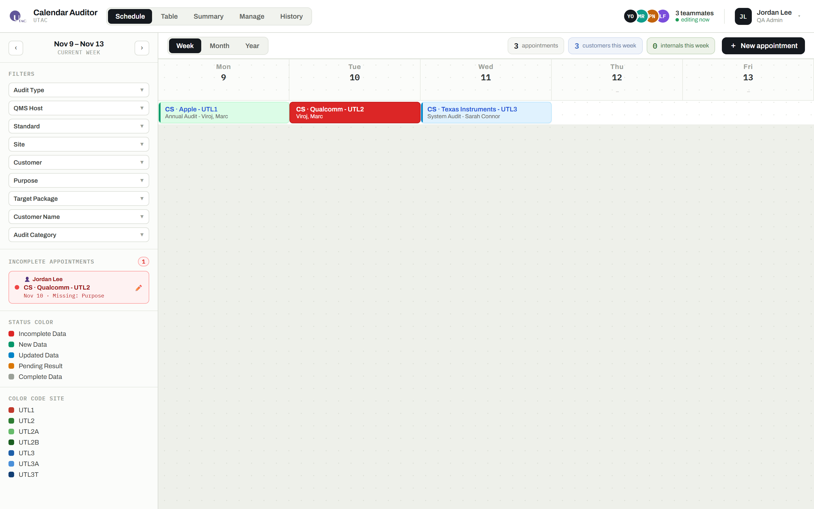
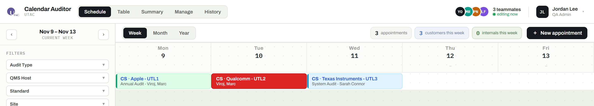
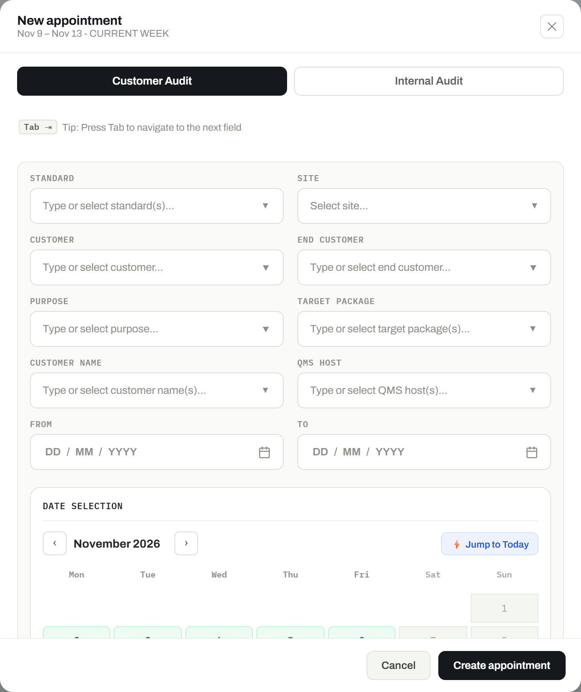
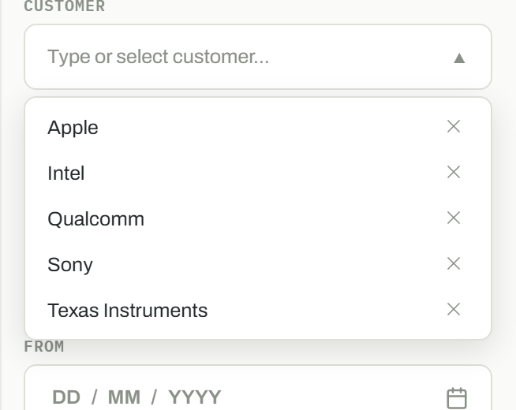
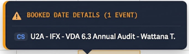
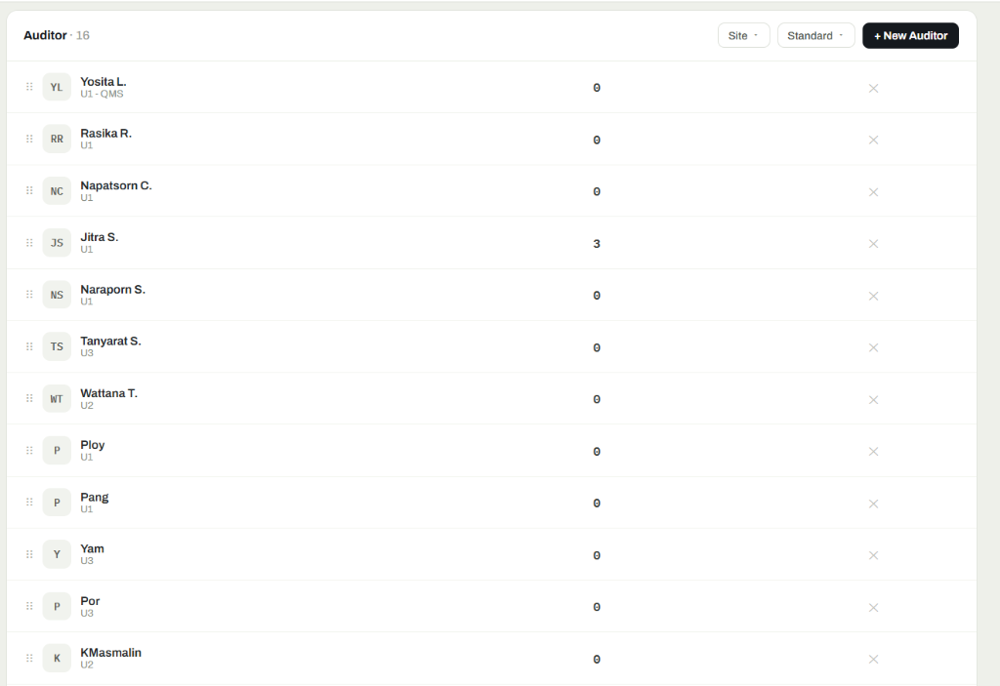
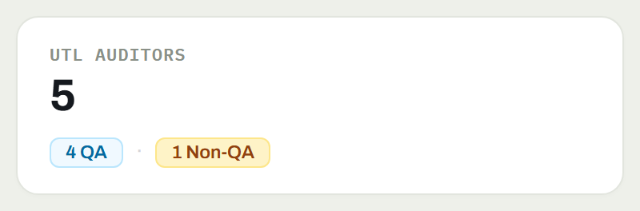

1. บทสรุปผู้บริหารและเป้าหมายของระบบ (Executive Summary & Purpose)
ระบบ UTAC QA Calendar ได้รับการพัฒนาขึ้นมาเพื่อทดแทนสเปรดชีตแบบเดิมที่กระจัดกระจายและขาดความต่อเนื่อง โดยทำหน้าที่เป็นศูนย์กลางหนึ่งเดียวในการวางแผน การลงพื้นที่ตรวจประเมิน และการวิเคราะห์ผลการตรวจคุณภาพครอบคลุม โรงงานหลักทั้ง 3 แห่ง (3 Primary Manufacturing Plants) พร้อมพื้นที่และอาคารปฏิบัติการย่อย (Facility Subsets) รวม 7 รหัสไซต์ตรวจประเมิน:
UTL1, UTL2 (รวมพื้นที่ย่อย UTL2A, UTL2B), และ UTL3 (รวมพื้นที่ย่อย UTL3A, UTL3T)
ระบบผสานการทำงานร่วมกันระหว่าง Customer Audits (การตรวจประเมินโดยลูกค้าภายนอก) และ Internal Audits (การตรวจประเมินระบบคุณภาพภายใน) ตามมาตรฐานสากล เช่น ISO 9001, IATF 16949, ISO 14001, ISO 45001, ESD, EHS และ VDA 6.3 พร้อมกลไกตรวจสอบความถูกต้องเข้มงวด 100% และการจำลองข้อมูลไปยังคลาวด์อัตโนมัติ
2. เทคโนโลยีที่ใช้และโครงสร้างสถาปัตยกรรม (Technology Stack)
| ระดับชั้น (Layer) | เทคโนโลยีที่ใช้งาน | บทบาททางสถาปัตยกรรมและรายละเอียดการทำงาน |
|---|---|---|
| ส่วนหน้าเว็บ (Frontend Core) | React 19, TypeScript, Vite | รองรับ Concurrent Rendering, การตรวจสอบ Type ที่รัดกุม, สถาปัตยกรรม Micro-components และการพัฒนาที่รวดเร็วด้วย Vite |
| การจัดการสถานะ (State Management) | Custom ViewModel Hook (useScheduler.ts) |
เป็น Single Source of Truth ควบคุมข้อมูลตารางนัดหมายทั้งหมด, การอัปเดตแบบ Optimistic, ระบบกรองข้อมูลหลายมิติ และการคำนวณสถิติ |
| หน่วยความจำแคชในเครื่อง (Local Cache) | Dual-Layer LocalStorage Snapshot | โหลดข้อมูลขึ้นหน้าจอทันทีจาก localStorage['calendar_qa_snapshot'] ในระดับเสี้ยววินาที ทำให้ใช้งานแบบออฟไลน์ได้และหน้าจอไม่กระตุกระหว่างรอเชื่อมต่อเซิร์ฟเวอร์ |
| เซิร์ฟเวอร์ Edge (API Gateway) | Cloudflare Workers (worker/index.ts) |
ประมวลผลบน V8 Isolates กระจายอยู่กว่า 300 ดาต้าเซ็นเตอร์ทั่วโลก รองรับ CORS อัตโนมัติ, ตรวจสอบโครงสร้างตาราง D1 และตอบสนองเร็วกว่า 40ms |
| ฐานข้อมูลกระจายตัว (Database) | Cloudflare D1 (Serverless SQLite) | ฐานข้อมูลเชิงสัมพันธ์แบบกระจายศูนย์ รองรับ ACID Transactions, Foreign Keys, การจัดเก็บผลตรวจแบบ JSON และระบบ Database Migrations |
| การเชื่อมต่อภายนอกและเอกสาร | xlsx-js-style (Client-Side Engine) |
สร้างไฟล์รายงาน Excel (.xlsx) สรุปผลแยกโรงงานและเดือน พร้อมฟอร์แมตสีและเส้นตารางสวยงาม ทำงานบนเบราว์เซอร์ 100% โดยไม่ต้องพึ่งพาเซิร์ฟเวอร์ภายนอก |
3. ผังโครงสร้างระดับ Edge และ Cloud (System Topology Diagram)
แผนภาพแสดงสถาปัตยกรรมการเชื่อมต่อแบบ Stand-Alone ระหว่างเบราว์เซอร์ของผู้ใช้, Cloudflare Edge API และฐานข้อมูลกระจายตัว D1 (พร้อมระบบส่งออกรายงานไฟล์ Excel .xlsx ฝั่งเบราว์เซอร์):
4. วงจรชีวิตข้อมูลและการทำงานครบวงจร (Data Lifecycle & End-to-End Workflows)
เพื่อให้มั่นใจว่าระบบจะตอบสนองทันทีโดยไม่มีการรอคอย และสามารถทำงานได้อย่างราบรื่นในพื้นที่โรงงานผลิตที่มีสัญญาณเครือข่ายไม่เสถียร ระบบจึงใช้สถาปัตยกรรม Dual-Layer Persistence ร่วมกับกลไกการกลายพันธุ์ข้อมูลแบบ Optimistic UI Update และการส่งออกสเปรดชีตผ่านเบราว์เซอร์ 100%
ชั้นที่ 1 (Local Snapshot): อ่าน/เขียนแคชทันทีที่คีย์ localStorage['calendar_qa_snapshot'] (Cold Start: 0ms)
ชั้นที่ 2 (Edge Cloudflare D1): ซิงค์ข้อมูลสอดคล้องกันผ่าน REST API GET /api/state และ D1 SQLite Transactions
กระบวนการทำงานหลักจากโค้ดเบส (3 Core End-to-End Workflows)
🔄 Workflow A: Data Loading & State Hydration (การโหลดข้อมูลและเตรียมสถานะระบบ)
Initial Load / Zero Cold-Startผังการโหลดข้อมูลตั้งแต่เปิดเว็บเบราว์เซอร์จนถึงการคำนวณสถิติและแสดงผลปฏิทิน:
- Instant Offline Hydration (
src/data.ts→initialState()): เมื่อผู้ใช้เปิดหน้าเว็บ ฟังก์ชันจะดึงแคชจากlocalStorage.getItem('calendar_qa_snapshot')เพื่อสร้าง State ในหน่วยความจำทันที ทำให้ตารางปฏิทินและตัวเลือกแสดงผลทันทีโดยไม่ต้องรอเครือข่าย - Edge API Handshake (
src/useScheduler.ts→api.fetchState()): ส่งคำขอ HTTP AsynchronousGET /api/stateไปยัง Cloudflare Worker เพื่อดึงข้อมูลสดล่าสุด - Concurrent D1 Queries (
worker/index.ts): Cloudflare Worker รันบน V8 Isolate ทำการ Query ตารางในฐานข้อมูล D1 พร้อมกันผ่านPromise.all:SELECT * FROM engineers, plants, active_plants, orders, assignments, comments, activity, options - State Reconciliation & Snapshot Update (
src/useScheduler.ts): ข้อมูลที่ได้รับจะถูกปรับรูปแบบผ่านnormalizeAssignment()และอัปเดตลง State Tree พร้อมเขียนทับลงlocalStorage.setItem('calendar_qa_snapshot', ...)เพื่อเป็นแคชล่าสุด - Unified Metrics Rollup (
src/utils/auditMetricsHelper.ts→calculateAuditStats()): ทำการ Reconcile วันตรวจต่อเนื่องหลายวัน (Consecutive Dates) ของงานเดียวกันให้ยุบเป็น 1 แคมเปญ ส่งผลให้ตัวเลขสรุปผล (Customer Audits, Internal Audits, Total Audits) ตรงกันทุกหน้าจอ
⚡ Workflow B: Create / Update / Delete Mutation Flow (การสร้าง แก้ไข และลบนัดหมาย)
Optimistic UI / Dynamic Dropdown Syncผังการกลายพันธุ์ข้อมูลแบบเรียลไทม์พร้อมการรีเฟรชตัวเลือกลงดรอปดาวน์อัตโนมัติ:
- User Form Submission (
AppointmentFormFields.tsx): ผู้ใช้ส่งข้อมูลจาก Modal ตรวจสอบความถูกต้องครบทั้ง 8 ฟิลด์ (Customer) หรือ 6 ฟิลด์ (Internal) - Optimistic ViewModel Update (
src/useScheduler.ts): ฟังก์ชันsubmitCreate(),submitEdit(), หรือremoveAssign()อัปเดตstate.assignmentsในหน่วยความจำทันที ผู้ใช้จะเห็น Card เปลี่ยนแปลงบนปฏิทินทันที (0ms Latency) พร้อมบันทึก Snapshot ลงlocalStorage - Asynchronous REST API Invocation (
src/api.ts): ยิงคำสั่งในเบื้องหลัง:
• สร้าง:POST /api/assignments,POST /api/orders
• แก้ไข:PUT /api/assignments/:id
• ลบ:DELETE /api/assignments/:id(พร้อม Cascade ลบcomments) - D1 Transaction Persistence (
worker/index.ts): Cloudflare Worker ดำเนินการ Prepared StatementINSERT,UPDATE, หรือDELETEบันทึกลง D1 SQLite อย่างปลอดภัย - Dynamic Dropdown Options Refresh (
src/utils/auditOptionsHelper.ts→getActiveDropdownOptions()): ดรอปดาวน์STANDARD,CUSTOMER,PURPOSE,QMS HOSTฯลฯ ถูกคำนวณใหม่จากรายการนัดหมายที่ยังคงอยู่ หากนัดหมายถูกลบ ค่ากำพร้าจะหายไปจากตัวเลือกทันทีทุกหน้าจอ (โดยคงรายชื่อโรงงานSITEไว้ตามมาตรฐานMASTER_PLANT_SITES: UTL1..UTL3T)
📊 Workflow C: Client-Side Excel (.xlsx) Export Flow (การส่งออกไฟล์ Excel ผ่านเบราว์เซอร์ 100%)
Zero-Server / Standalone .xlsxการสร้างไฟล์สเปรดชีตความเร็วสูงที่ทำงานบนหน่วยความจำไคลเอนต์โดยสมบูรณ์:
- Trigger Export: ผู้ใช้คลิกปุ่มส่งออกใน
TableView.tsx(handleExportExcel) หรือSummaryDashboard.tsx(handleExportVisitsExcel,handleExportFindingsExcel) - Data Extraction & KPI Rollup: ดึงชุดข้อมูลที่ผ่านตัวกรอง active และจัดโครงสร้าง Matrix (เช่น แยกตามโรงงานและ 12 เดือน พร้อมยอดรวม CS / IA) ที่ได้จาก
calculateAuditStats() - On-Demand Lazy Loading: โหลดไลบรารี
xlsx-js-styleแบบ Dynamic Import เฉพาะเมื่อมีการเรียกใช้งาน:const XLSX = (await import('xlsx-js-style')).default || (await import('xlsx-js-style')); - In-Memory Worksheet Construction & Styling: แปลง Array ข้อมูลด้วย
XLSX.utils.aoa_to_sheet()พร้อมจัดสไตล์ระดับเซลล์ (ฟอนต์ Calibri, สีหัวตาราง#1E3A8A, ขอบเส้นคู่ที่แถวยอดรวม, และ AutoFilterworksheet['!autofilter']) - Instant Browser File Download: สั่งดาวน์โหลดด้วย
XLSX.writeFile(workbook, filename)โดยเบราว์เซอร์จะสร้าง Blob และเซฟไฟล์.xlsxลงเครื่องทันที
*ยืนยันการทำงานแบบอิสระ: ไม่มีการเรียก API ไปยังเซิร์ฟเวอร์ และไม่มีการพึ่งพาเซิร์ฟเวอร์หรือบริการภายนอกใดๆ (0 Network Requests)*
5. โครงสร้างฐานข้อมูลเชิงสัมพันธ์ Cloudflare D1 SQLite
ฐานข้อมูลหลักเลือกใช้ Cloudflare D1 ซึ่งเป็น SQLite แบบกระจายศูนย์ ออกแบบโครงสร้างตารางเพื่อประสิทธิภาพในการแสดงผลปฏิทินที่รวดเร็ว พร้อมคงความสมบูรณ์ของข้อมูลด้วย Foreign Keys:
| ชื่อตาราง (Table) | คีย์หลัก (PK) | คีย์นอก (FK) | คำอธิบายโครงสร้างและคอลัมน์สำคัญ |
|---|---|---|---|
assignments |
id |
eng → engineers(id)order_id → orders(id) |
ช่องตารางนัดหมายรายวัน: week, day, site1, site2, customer, end_customer, auditor1, auditor2, department, purpose, target_package, audit_category, results (บันทึกผลการตรวจแยกตามโรงงานในรูปแบบ JSON), created_at, updated_at
|
orders |
id |
ไม่มี | หัวข้องานตรวจประเมิน: customer, product, plant, purpose |
engineers |
id |
ไม่มี | ทะเบียนวิศวกรผู้ตรวจ: name, role, department (QA / Non-QA), site (โรงงานหลักเริ่มต้น UTL1), sub_departments (กลุ่มแผนก QMS, EHS, ESD) |
plants |
id |
ไม่มี | กลุ่มสายงานตรวจ: name, loc, code, color (QMS=#2f6df0, EHS=#0f9d8c, ESD=#c2620c) |
active_plants |
plant_id |
plant_id → plants(id) |
สวิตช์เปิด/ปิดการแสดงแถวในปฏิทิน (active: 0|1) |
options |
category + value |
ไม่มี |
ทะเบียนตัวเลือกส่วนกลาง: site_code, customer_name, end_customer, department, purpose, target_package, และบันทึกการจัดเรียงลำดับใน _order_<category>
|
comments |
id |
assignment_id → assignments(id) |
ข้อความโน้ตและบันทึกการประสานงานภายในงานตรวจ |
activity |
id |
ไม่มี | ประวัติการดำเนินงาน (Audit Trail) บันทึกทุกการสร้าง แก้ไข หรือลบข้อมูล พร้อมผู้ทำรายการและเวลา |
6. สถาปัตยกรรมเรียงลำดับสากล (Universal Master-Order Architecture)
แต่เดิม การเรียงลำดับของโรงงานหรือลูกค้าอาจขึ้นกับค่าคงที่ในโค้ด ในระบบเวอร์ชันปัจจุบัน ลำดับที่กำหนดในแท็บ "Options" จะทำหน้าที่เป็น Single Source of Truth สำหรับทั้งแอปพลิเคชัน:
_order_<category> และส่งผลสะท้อนไปยังทุกหน้าจอโดยอัตโนมัติ:
- ลำดับรายการใน Dropdown และช่องเลือกแบบพิมพ์ค้นหา (Combobox)
- เมนูกรองข้อมูลในหน้า Table View และ Calendar
- การเรียงตัวอักษรของโรงงานผสม เช่น
UTL1/UTL2/UTL3 - หัวคอลัมน์และแถวตารางในหน้า Summary Dashboard ประจำปี
- การจัดเรียงเมื่อคลิกหัวตารางใน Table View
7. ผังสถานะความสมบูรณ์ของการนัดหมาย (Compliance Lifecycle State Machine)
แผนภาพแสดงวงจรสถานะของบัตรนัดหมายตรวจประเมิน ตั้งแต่การสร้าง, การแจ้งเตือนข้อมูลไม่ครบ, จนถึงการบันทึกผลสำเร็จ:
8. เจาะลึกฟีเจอร์ที่ 1: ตารางปฏิทินแบบ Timeline และการแสดงผลหลายมุมมอง
Schedule.tsx)หน้าจอ Calendar มอบมุมมองแบบ Gantt Timeline ที่มีความหนาแน่นของข้อมูลสูง ช่วยให้ทีม QA และผู้บริหารสามารถวางแผนงานตรวจประเมินได้อย่างชัดเจนทั้งแบบรายวันและงานตรวจที่ยาวหลายวัน
ก. การจัดกลุ่มแถว 3 มิติ (Multi-Dimensional Grouping)
- Group by Person (จัดกลุ่มตามผู้ตรวจ): แถวแต่ละแถวจะแทนวิศวกร QA หรือ Lead Auditor แต่ละคน เพื่อดูภาระงาน การมอบหมายงาน และความพร้อมในแต่ละสัปดาห์
- Group by Plant (จัดกลุ่มตามสายงาน): จัดกลุ่มตามแผนกดำเนินงาน (
QMS,EHS,ESD) เพื่อตรวจเช็คความครอบคลุมของสายงาน - Group by Site (จัดกลุ่มตามโรงงาน): จัดกลุ่มตามโรงงานผลิต (
UTL1,UTL2,UTL2A,UTL2B,UTL3,UTL3A,UTL3T) เพื่อดูความถี่การเข้าตรวจของแต่ละโรงงาน
ข. ตรรกะงานตรวจหลายวันและการเชื่อมต่อข้ามวัน (Multi-Day Span)
งานตรวจประเมินที่กินเวลาต่อเนื่องหลายวันจะถูกวาดเป็นแถบเส้นเชื่อม (Pill Bar) ยาวต่อเนื่อง และหากเป็นงานที่แยกผู้ตรวจในแต่ละวัน ระบบจะเชื่อมโยงเป็นกลุ่มเดียวกันอย่างแม่นยำ
ค. ระบบสีเตือนความถูกต้องและมาตรฐานคุณภาพเข้มงวด
#dc2626) พร้อมเครื่องหมายเตือนทันที หากขาดข้อมูลจำเป็นช่องใดช่องหนึ่ง (Standard, Site, Customer, Purpose, QMS Host) และแสดงในรายการคิวเตือนด้านซ้ายnow - createdAt <= 7d) ไม่ว่าวันนัดหมายจะอยู่ในอนาคตหรือลงบันทึกย้อนหลัง

ง. หน้าต่าง Tooltip ลอยแสดงรายละเอียดเมื่อชี้เมาส์ (Hover Tooltip)
เมื่อเลื่อนเมาส์ไปชี้ที่บัตรนัดหมาย จะปรากฏกล่อง Tooltip ลอยแนบกับตัวบัตรทันที เพื่อแสดงชื่อลูกค้า, โรงงาน, มาตรฐาน, วัตถุประสงค์, ขอบเขตการตรวจ, วิศวกรผู้ดูแล และข้อบกพร่อง โดยไม่ต้องกดเปิดหน้าต่างแก้ไข
9. เจาะลึกฟีเจอร์ที่ 2: หน้าต่างบันทึกนัดหมายและการตรวจสอบข้อมูลเข้มงวด
AppointmentFormFields.tsx)หน้าต่างสร้างและแก้ไขการนัดหมายถูกออกแบบแยกชัดเจนระหว่าง Customer Audit และ Internal Audit:
ฟอร์ม Customer Audit (ต้องกรอกครบ 8 ช่อง + วันที่)
- Standard: มาตรฐานการตรวจ (ISO 9001, IATF 16949, Customer Specific ฯลฯ)
- Site: โรงงานที่เข้าตรวจ (เรียงตามลำดับ Master อัตโนมัติ)
- Customer: ช่องพิมพ์ค้นหาชื่อลูกค้าพร้อมระบบ Auto-suggest
- End Customer: ลูกค้าปลายทาง (แยกลิสต์กับลูกค้าหลัก)
- Purpose: วัตถุประสงค์ (Certification, Surveillance ฯลฯ)
- Target Package: แพ็กเกจไอซีที่ตรวจ (QFN, BGA, WLCSP ฯลฯ)
- Customer Name: ชื่อผู้ตรวจหรือตัวแทนลูกค้า
- QMS Host: วิศวกร QA ผู้รับผิดชอบดูแลลูกค้า (ห้ามเว้นว่างหรือ Unassigned)
- Date Range: วันที่เริ่มต้นและวันสิ้นสุดการตรวจประเมิน (From & To)
ฟอร์ม Internal Audit (บังคับตรวจสอบเข้มงวด ต้องกรอกครบทั้ง 6 ช่อง)
- Standard: มาตรฐานหรือข้อกำหนดการตรวจภายใน (IATF 16949, ISO 9001, EHS & RBA ฯลฯ)
- Site: โรงงานหรือไซต์ที่เข้าตรวจประเมิน (UTL1, UTL2, UTL3 ฯลฯ)
- Audit Category: หมวดหมู่การตรวจประเมินระบบคุณภาพภายใน
- Area: พื้นที่หรือสายการผลิตที่เข้าตรวจประเมิน (ตรวจสอบอย่างเคร่งครัด)
- QMS Host: วิศวกร QA ผู้รับผิดชอบดูแลการตรวจ (ห้ามเว้นว่างหรือ Unassigned)
- Date Range: วันที่เริ่มต้นและวันสิ้นสุดการตรวจประเมิน (From & To)
Tab ⇥ Tip: กด Tab เพื่อเลื่อนไปกรอกช่องถัดไป (Press Tab to jump to the next field) ช่วยให้ผู้ใช้งานสามารถเลื่อนกรอกได้ครบทั้ง 8 ช่องอย่างรวดเร็วโดยไม่ต้องยกมือออกจากแป้นพิมพ์


10. เจาะลึกฟีเจอร์ที่ 3: การบันทึกผลการตรวจประเมินและข้อบกพร่อง
AuditResultsModal.tsx)
เมื่องานตรวจเสร็จสิ้น วิศวกรจะเปิดหน้าต่าง Audit Results เพื่อลงผลตัวเลขข้อบกพร่อง โดยในกรณีของงานตรวจแบบหลายโรงงานพร้อมกัน (เช่น UTL1/UTL2/UTL3) ระบบจะเปิดให้บันทึกผลแยกตามแต่ละโรงงานอย่างอิสระ:
| ระดับข้อบกพร่อง | นิยามตามมาตรฐานสากล | ผลกระทบต่อสถานะของงานตรวจ |
|---|---|---|
| Major Non-Conformance (Major NC) | ข้อบกพร่องรุนแรงที่ส่งผลต่อระบบคุณภาพหรือผิดข้อกำหนดลูกค้าโดยตรง ต้องส่งแผนแก้ไข (CAPA) ภายใน 30 วัน | ระบบจะติดแท็กเตือนข้อบกพร่องระดับวิกฤต |
| Minor Non-Conformance (Minor NC) | ข้อบกพร่องเล็กน้อยที่ไม่ส่งผลกระทบต่อคุณภาพผลิตภัณฑ์โดยตรง | งานตรวจถือว่าผ่านเมื่อส่งแผนการแก้ไขเบื้องต้น |
| Opportunity for Improvement (OFI) | ข้อเสนอแนะในการปรับปรุงเพื่อยกระดับประสิทธิภาพกระบวนการ | บันทึกเก็บไว้สำหรับการติดตามพัฒนาการ |
| Observations (Obs) | ข้อสังเกตหน้างานที่ผู้ตรวจพบเห็นระหว่างเดินสายการผลิต | ใช้เป็นข้อมูลอ้างอิงในการตรวจครั้งถัดไป |
11. เจาะลึกฟีเจอร์ที่ 4: ตารางข้อมูลความเร็วสูง (Dynamic Table View)
TableView.tsx)หน้าจอ Table View ออกแบบมาเพื่อการค้นหา การกรองข้อมูลแบบกลุ่ม และการส่งออกข้อมูลการตรวจประเมิน:
จุดเด่นสำคัญของตาราง:
- ช่องค้นหา Real-Time: ค้นหาข้อความได้ทันทีในทุกคอลัมน์ (ลูกค้า, ลูกค้าปลายทาง, โรงงาน, มาตรฐาน, ผู้ตรวจ, วัตถุประสงค์, ขอบเขต)
- ตัดรายชื่อลูกค้าที่ไม่มีงานออกอัตโนมัติ (Customer Pruning): ป้องกันปัญหา "ลูกค้าผี" ค้างใน Dropdown (เช่น ลูกค้า "IFX" ที่เคยค้างในระบบแม้ลบนัดหมายไปแล้ว) โดยระบบจะดึงเฉพาะลูกค้าที่มีนัดหมายในระบบจริงเท่านั้น
- เรียงคอลัมน์ตามลำดับ Master: เมื่อคลิกหัวคอลัมน์ Site ระบบจะเรียงตามลำดับที่ตั้งไว้ในแท็บ Options (
UTL1 → UTL2 → UTL2A → UTL2B → UTL3 → UTL3A → UTL3T) แทนการเรียงตามตัวอักษร A-Z ทั่วไป - การลบแบบ Cascade ปลอดภัย: เมื่อลบนัดหมาย ระบบจะลบช่องวันที่เชื่อมโยงกันทั้งหมด และทำความสะอาดตัวเลือกที่ไม่ได้ใช้จาก D1 อัตโนมัติ
- ส่งออก Excel และ CSV: ส่งออกชุดข้อมูลพร้อมผลตรวจและข้อมูลครบถ้วนในคลิกเดียว
12. เจาะลึกฟีเจอร์ที่ 5: แดชบอร์ดสรุปผลประจำปีสำหรับผู้บริหาร
SummaryDashboard.tsx)แดชบอร์ดสรุปผลจะประมวลผลข้อมูลการตรวจประเมินทั้งปีออกมาเป็นตารางเมทริกซ์แยกตาม 12 เดือนในปฏิทิน:
เมทริกซ์การตรวจแยกตามโรงงาน (Site Breakdown)
แสดงจำนวนการตรวจประเมินในแต่ละเดือนตลอดทั้งปีสำหรับทั้ง 7 ไซต์ของ 3 โรงงานหลัก (UTL1 ถึง UTL3T) พร้อมร้อยละของงานที่เสร็จสิ้นและสัดส่วนข้อบกพร่อง
เมทริกซ์แยกตามมาตรฐานและประเภทงาน
แสดงสัดส่วนระหว่าง Customer Audits และ Internal Audits แยกตามมาตรฐาน ISO 9001, IATF 16949, ESD, EHS และ VDA 6.3
การส่งออกไฟล์ Excel รูปแบบบริษัทผ่าน xlsx-js-style
ปุ่ม "Export Excel" จะสร้างไฟล์งาน Excel ที่มีการจัดรูปแบบสีหัวตาราง, ฟอนต์ตัวหนา, ขอบตารางชัดเจน และสูตรคำนวณผลรวมอัตโนมัติตรงตามฟอร์มรายงานของฝ่ายบริหาร

13. เจาะลึกฟีเจอร์ที่ 6: จัดการทีมผู้ตรวจและตัวเลือกระบบ
Admin.tsx, EngineerModal.tsx)ทำเนียบวิศวกรผู้ตรวจประเมิน
- โปรไฟล์วิศวกร: ชื่อ, ตำแหน่ง, โรงงานประจำสังกัด
- แผนกงาน (Department): ตัวเลือกชัดเจนระหว่าง
QAและNon-QA - แท็กสายงาน (Plant Tags): กำหนดความเชี่ยวชาญ
QMS,EHS,ESD,ESD Audit,QS Audit - สถานะ Lead Auditor: ระบุคุณสมบัติการเป็นหัวหน้าผู้ตรวจ
- สวิตช์เปิด/ปิดการแสดงผล: ซ่อนวิศวกรจากตารางได้โดยไม่ลบประวัติงานเดิม
แท็บ Options (การจัดเรียงลำดับสากล)
- หมวดหมู่ที่จัดการ: Sites, Customers, End Customers, Standards, Purposes, Target Packages, Departments
- ลากจัดลำดับได้อิสระ: ลากสลับตำแหน่งเพื่อกำหนดลำดับการแสดงผลในแอปพลิเคชัน
- ส่งผลทั่วทั้งระบบทันที: ยิง API
PUT /api/options/reorderบันทึกลง D1 และอัปเดต Local Snapshot ทันทีโดยไม่ต้องโหลดหน้าเว็บใหม่


14. เจาะลึกฟีเจอร์ที่ 7: ประวัติและบันทึกกิจกรรมการทำงาน (Audit Trail)
HistoryView.tsx)
เพื่อรักษาความโปร่งใสและปฏิบัติตามข้อกำหนดของระบบคุณภาพ ทุกการกระทำในระบบจะถูกบันทึกไว้ในตาราง activity ของ Cloudflare D1:
- ประเภทกิจกรรม: สร้างนัดหมาย, แก้ไขนัดหมาย, บันทึกผลตรวจ, ลบนัดหมาย, แก้ไขข้อมูลวิศวกร, ปรับลำดับตัวเลือก
- ผู้ดำเนินรายการ: แสดงชื่อหรือรหัสผู้ใช้งานที่ทำรายการ
- เวลาที่ทำรายการ: แสดงเวลาแบบเปรียบเทียบ (เช่น "2 hours ago") และวันเวลามาตรฐาน ISO 8601
- รายละเอียดเป้าหมาย: ระบุชื่อลูกค้า โรงงานที่ได้รับผลกระทบ และรหัสนัดหมาย
16. ข้อกำหนด REST API Endpoints ของระบบ
Endpoints ทั้งหมดให้บริการผ่าน Cloudflare Workers ภายใต้พาธ /api/* ในรูปแบบ JSON:
| Method & Route | ข้อมูลที่ส่ง (Payload) | หน้าที่และผลลัพธ์การทำงาน |
|---|---|---|
GET /api/state |
ไม่มี | ส่งคืนสถานะระบบทั้งหมด: วิศวกร, โรงงาน, คำขอนัดหมาย, ผลตรวจ, โน้ต, ประวัติกิจกรรม และตัวเลือกที่จัดเรียงแล้ว |
POST /api/assignments |
JSON ของนัดหมาย | สร้างรายการในตาราง assignments และบันทึกประวัติลง activity |
PUT /api/assignments/:id |
JSON ข้อมูลที่แก้ไข | อัปเดตข้อมูลนัดหมายหรือผลการตรวจ พร้อมบันทึกเวลาอัปเดต |
DELETE /api/assignments/:id |
ไม่มี | ลบนัดหมายและวันตรวจที่เกี่ยวข้องแบบ Cascade พร้อมทำความสะอาดตัวเลือกลูกค้าที่ไม่ได้ใช้งาน |
PUT /api/options/reorder |
{ category, order: string[] } |
บันทึกลำดับใหม่ลงใน _order_<category> ของ D1 และอัปเดตการแสดงผลทันที |
16. ตารางตรวจสอบสถานะฟังก์ชันทั้งหมดในระบบ (Comprehensive Feature Inventory & UI Status Matrix)
ส่วนนี้รวบรวมการตรวจสอบเชิงเทคนิคของทุกฟังก์ชัน, ข้อมูล, API Endpoints และหน้าต่างการทำงานในโค้ดเบสของ UTAC QA Calendar โดยจำแนกสถานะการแสดงผลและการใช้งานจริงบนหน้าเว็บ (UI Availability) ไว้อย่างชัดเจน:
| ฟังก์ชัน / ระบบงาน | ไฟล์โค้ดและส่วนประกอบ | สถานะบน UI | คำอธิบายและเหตุผลในการทำงาน |
|---|---|---|---|
| ปฏิทินไทม์ไลน์แบบโต้ตอบ | src/components/Schedule.tsx |
Active in UI | ตารางปฏิทิน 365 วัน พร้อมระบบจัดกลุ่ม 6 มิติ, การซูมปรับสเกล และ Tooltip ลอยอัจฉริยะ |
| ฟอร์มนัดหมาย Customer Audit | src/components/AppointmentFormFields.tsx |
Active in UI | ฟอร์มบันทึกนัดหมายลูกค้า ตรวจสอบความถูกต้องครบทั้ง 8 ช่อง พร้อมแบนเนอร์สีแดงแจ้งเตือนทันที |
| ฟอร์มนัดหมาย Internal Audit | src/components/AppointmentFormFields.tsx |
Active in UI | ฟอร์มตรวจประเมินภายใน ตรวจสอบครบทั้ง 6 ช่อง: Standard, Site, Audit Category, Area, QMS Host, และ Date Range |
| ช่องเลือกวันที่เมื่อแก้ไขแบบวันเดียว | AppointmentFormFields.tsx (isDateLocked) |
Disabled in UI / Conditional | เมื่อผู้ใช้เลือกแก้ไขเฉพาะวันใดวันหนึ่ง ช่องเลือกวันที่จะถูกล็อก (disabled={true}) และปฏิทิน AvailabilityDatePicker จะถูกซ่อน พร้อมแสดงแถบล็อกแนะนำให้เลือก "แก้ไขทั้งนัดหมาย" หากต้องการเปลี่ยนวัน |
| ระบบโน้ตและแสดงความคิดเห็น | src/components/DetailPanel.tsxworker/index.ts (/api/comments)D1 table comments |
Dormant / Unrendered in UI | มีตารางในฐานข้อมูล D1, API หลังบ้าน (POST, DELETE /api/comments) และหน้าต่าง DetailPanel.tsx สมบูรณ์ แต่ไม่ได้ถูก Mount ในหน้าจอหลักของ UI ปัจจุบัน ทำให้ผู้ใช้ยังไม่เห็นช่องพิมพ์คอมเมนต์บนหน้าจอ |
| ฟังก์ชันคัดลอกนัดหมาย (Duplicate) | src/useScheduler.ts (duplicate(aid)) |
Dormant / Unrendered in UI | มีโค้ดโคลนนิ่งนัดหมายไปยังวันถัดไปพร้อมบันทึก Audit Trail ใน State แต่ไม่มีปุ่มคลิกเรียกใช้งานในหน้าโมดอลหรือตาราง |
| ปุ่มสลับเรียงลำดับการค้นหา เก่าสุด/ใหม่สุด | src/useScheduler.ts (searchSort) |
Dormant / Unrendered in UI | State และฟังก์ชันกรองข้อมูลรองรับการเรียงตาม oldest หรือ newest แต่ในแถบค้นหาบนหน้า UI มีเพียงช่องพิมพ์ข้อความ ไม่มีปุ่มคลิกสลับ |
| หน้าจอจัดการ Orders แยกต่างหาก | worker/index.ts (/api/orders)D1 table orders |
Backend-Only / API Service | รหัส Order (เช่น NEW-001) ถูกสร้างขึ้นอัตโนมัติในพื้นหลังเพื่อเป็นตู้เก็บนัดหมาย ไม่มีเมนูหน้าจอหรือแบบฟอร์ม CRUD ของ Orders ใน UI |
| API จัดการและเปิดปิดสถานะโรงงานเดิม | worker/index.ts (/api/plants/:id/toggle)D1 table plants |
Backend-Only / Legacy | มี Route และตารางรองรับการ Toggle สถานะ Plants แต่ใน UI ปัจจุบัน การจัดการโรงงานและแผนกทั้งหมดถูกย้ายไปควบคุมผ่านแท็กตัวเลือกไดนามิกในแถบ Options |
แฟล็กสิทธิ์ isMaster ของผู้ตรวจประเมิน |
src/types.ts (Engineer.isMaster)src/components/EngineerModal.tsx |
Omitted from UI Form | มีอยู่ใน Data Model และตัวกรองระบบ (e.isMaster !== false) แต่หน้าต่าง EngineerModal.tsx ไม่มีช่อง Checkbox ให้ผู้ดูแลระบบกดติ๊ก โดยจะถือว่าเป็น Master โดยปริยาย |
| ช่องกรอก Lead Auditor แยกเดี่ยว | src/types.ts (Assignment.leadAuditor) |
Omitted from UI Form | มีในสคีมาข้อมูลและตัวตรวจสอบ แต่ในหน้าแบบฟอร์มนัดหมายถูกรวมเข้ากับ MultiAuditorSelect (เลือก QMS Host หลายคน) จึงไม่มีช่องข้อความ Lead Auditor แยก |
รหัสโรงงานแบบเดิม (U1..U3T) |
src/types.ts (normalizeSite())worker/index.ts |
Legacy / Filtered from UI | ฟังก์ชันแปลงรหัสอัตโนมัติเป็น UTL1..UTL4 ทำงานเพื่อรองรับข้อมูลย้อนหลัง แต่ถูกคัดกรองออกจากดรอปดาวน์และแท็กตัวเลือกทั้งหมดใน UI |
| บันทึกผลการตรวจและข้อบกพร่อง | src/components/AuditResultsModal.tsx |
Active in UI | โมดอลบันทึกผลการตรวจ Major, Minor, OFI, ข้อสังเกต และการเปลี่ยนสถานะเป็นตรวจเสร็จสิ้น |
| ตารางข้อมูลความเร็วสูงและการกรองหลายคอลัมน์ | src/components/TableView.tsx |
Active in UI | ตารางข้อมูลประสิทธิภาพสูง พร้อมการกรองละเอียด, การแบ่งหน้า (Pagination) และป้ายสถานะความสมบูรณ์ |
| แดชบอร์ด KPI ผู้บริหารและส่งออก Excel | src/components/SummaryDashboard.tsx |
Active in UI | เมทริกซ์สรุปผลแยกตามโรงงานและประเภทตรวจ พร้อมปุ่มดาวน์โหลดไฟล์ Excel (.xlsx) ที่จัดรูปแบบสวยงาม |
| การจัดเรียงตัวเลือกระบบแบบลากวาง (Drag-and-Drop) | src/components/Admin.tsx |
Active in UI | จัดเรียงลำดับ Sites, Standards, Customers, Departments แบบลากวาง พร้อมบันทึกและแสดงผลตามลำดับทันทีทั้งระบบ |
| บันทึกประวัติการทำงาน (Audit Trail) | src/components/HistoryView.tsx |
Active in UI | ระบบบันทึกเหตุการณ์ตามลำดับเวลา บันทึกการสร้าง, อัปเดต, ลบ และการลงผลตรวจ |